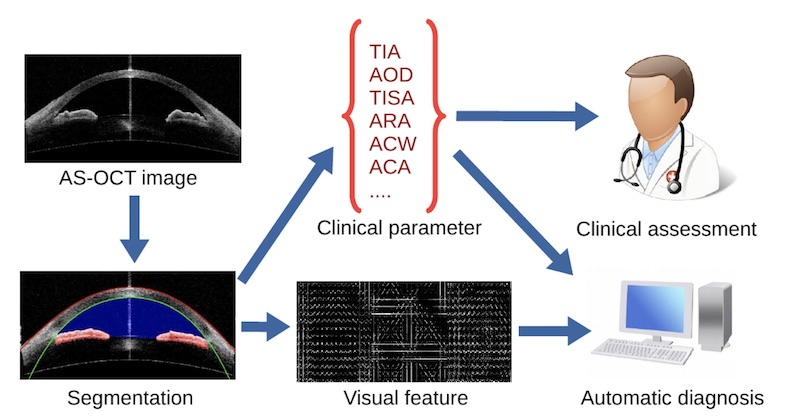

Angle-closure glaucoma is a major cause of irreversible visual impairment and can be identified by measuring
the anterior chamber angle (ACA) of the eye. The ACA can be viewed clearly through anterior segment optical
coherence tomography (AS-OCT). To address this problem, we propose a whole system for automatic AS-OCT
segmentation, measurement, and screening.

Demo Video:
Related Papers:
Huazhu Fu, Mani Baskaran, Yanwu Xu, Stephen Lin, Damon Wing Kee Wong, Jiang Liu, Tin A. Tun, Meenakshi
Mahesh, Shamira A. Perera, Tin Aung, "A Deep Learning System for Automated Angle-Closure Detection in
Anterior Segment Optical Coherence Tomography Images", American Journal of Ophthalmology
(AJO), 2019,[PDF]
Huazhu Fu, Yanwu Xu, Stephen Lin, Damon Wing Kee Wong, Baskaran Mani, Meenakshi Mahesh, Tin Aung, Jiang Liu,
"Angle-Closure Detection in Anterior Segment OCT based on Multi-Level Deep Network", IEEE
Transactions on Cybernetics (TCyb), 2019.
[PDF]
Huazhu Fu, Yanwu Xu, Stephen Lin, Damon Wing Kee Wong, Baskaran Mani, Meenakshi Mahesh, Tin Aung, Jiang
Liu, "Multi-Context Deep Network for Angle-Closure Glaucoma Screening in Anterior Segment
OCT",
in International Conference on Medical Image Computing and Computer Assisted Intervention (MICCAI),
2018. [PDF]
Huazhu Fu, Yanwu Xu, Stephen Lin, Xiaoqin Zhang, Damon Wing Kee Wong, Jiang Liu, Alejandro F. Frangi, Mani
Baskaran, Tin Aung, "Segmentation and Quantification for Angle-Closure Glaucoma Assessment in Anterior
Segment OCT", IEEE Transactions on Medical Imaging (TMI), vol. 36, no. 9, pp. 1930-1938,
2017. [PDF]
Huazhu Fu, Yanwu Xu, Damon Wing Kee Wong, Jiang Liu, Mani Baskaran, Shamira A. Perera, Tin Aung,
"Automatic Anterior Chamber Angle Structure Segmentation in AS-OCT Image based on Label
Transfer", in IEEE Engineering in Medicine and Biology Society (EMBC), 2016, pp.
1288-1291. [PDF]
Yanwu Xu, Lixin Duan, Huazhu Fu, Damon Wing Kee Wong, Baskaran Mani, Tin Aung, Jiang Liu, "Axial
Alignment for Anterior Segment Swept Source Optical Coherence Tomography via Robust Low-rank Tensor
Recovery", in International Conference on Medical Image Computing and Computer Assisted
Intervention (MICCAI), 2016, pp. 441-449. [PDF]